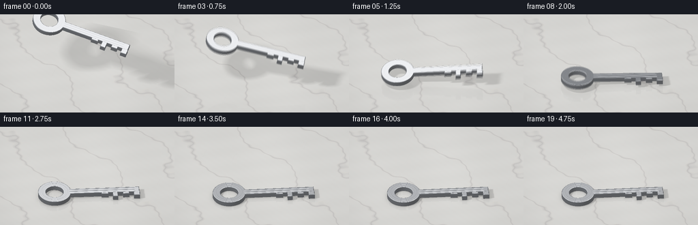
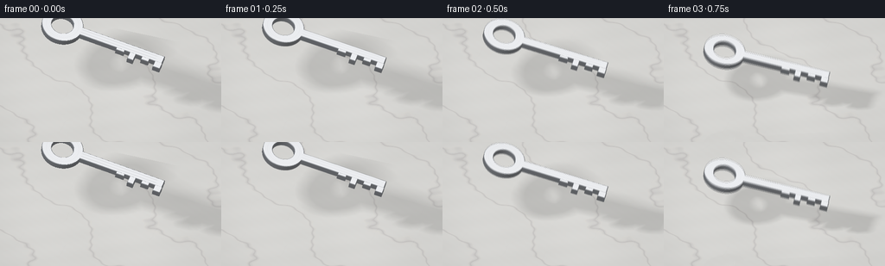
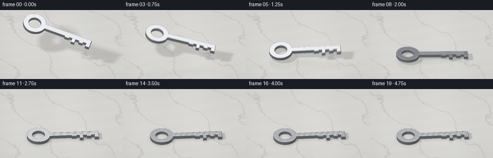
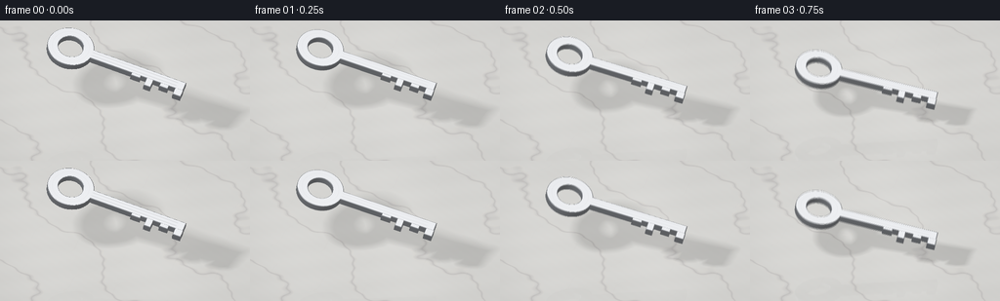

CODING AGENTS AS PIXEL WORLD MODELS
traex/GPT-6.1-Sol · material_0014
点击播放 · 原生 RGB 像素
逐轮保存的候选
回放视频、检查图与代码变化。
每份候选均可单独播放。实际图片检查记录在下方工具轨迹中。
候选 01播放与检查图
点击播放 · 原生 RGB 像素


展开代码变化
--- 上一保存版本
+++ 本次保存版本
@@ -0,0 +1,263 @@
+"""Procedural, deterministic RGB animation: steel key dropped onto polished marble.
+Uses only mathematical signed distance geometry, NumPy, and Pillow.
+"""
+from pathlib import Path
+import json
+import numpy as np
+from PIL import Image
+import artifact_io
+
+ROOT=Path(__file__).resolve().parent
+SPEC=json.loads((ROOT/'task_spec.json').read_text())
+W,H=SPEC['width'],SPEC['height']
+SS=2
+WW,HH=W*SS,H*SS
+DTYPE=np.float32
+
+def norm(a):
+ return a/np.maximum(np.linalg.norm(a,axis=-1,keepdims=True),1e-9)
+
+def rot(ax,ay,az):
+ cx,sx=np.cos(ax),np.sin(ax);cy,sy=np.cos(ay),np.sin(ay);cz,sz=np.cos(az),np.sin(az)
+ return np.array([[cz,-sz,0],[sz,cz,0],[0,0,1]],dtype=DTYPE)@np.array([[cy,0,sy],[0,1,0],[-sy,0,cy]],dtype=DTYPE)@np.array([[1,0,0],[0,cx,-sx],[0,sx,cx]],dtype=DTYPE)
+
+def rect(x,y,cx,cy,hx,hy):
+ a=np.abs(x-cx)-hx;b=np.abs(y-cy)-hy
+ return np.sqrt(np.maximum(a,0)**2+np.maximum(b,0)**2)+np.minimum(np.maximum(a,b),0)
+
+def outline(x,y):
+ r=np.sqrt((x+1.17)**2+y*y)
+ d=np.maximum(r-.515,.276-r)
+ d=np.minimum(d,rect(x,y,.345,0,1.135,.122))
+ # Substantial, asymmetric cut teeth along the business end.
+ for a,b,depth in [(.29,.51,.185),(.64,.80,.325),(.96,1.16,.21),(1.30,1.49,.295)]:
+ d=np.minimum(d,rect(x,y,(a+b)/2,(-.095-depth)/2,(b-a)/2,(depth-.095)/2))
+ return d
+
+def sdf(p):
+ a=outline(p[...,0],p[...,1])+.019
+ b=np.abs(p[...,2])-.062
+ return np.sqrt(np.maximum(a,0)**2+np.maximum(b,0)**2)+np.minimum(np.maximum(a,b),0)-.019
+
+# Fixed macro view, without camera cuts or unwanted background props.
+CAM=np.array([2.55,-7.2,6.5],dtype=DTYPE)
+TARGET=np.array([0.,0.,.66],dtype=DTYPE)
+FWD=norm(TARGET-CAM);RIGHT=norm(np.cross(FWD,np.array([0,0,1],dtype=DTYPE)));UP=norm(np.cross(RIGHT,FWD))
+xx,yy=np.meshgrid((np.arange(WW,dtype=DTYPE)+.5)/WW-.5,.5-(np.arange(HH,dtype=DTYPE)+.5)/HH)
+ORIG=(CAM+xx[...,None]*5.45*RIGHT+yy[...,None]*(5.45*HH/WW)*UP).reshape(-1,3)
+DIR=np.broadcast_to(FWD,ORIG.shape)
+FT=-ORIG[:,2]/FWD[2]
+FLOOR=ORIG+FT[:,None]*FWD
+
+# Marble is continuous in world space. The warp and fine branches are fixed.
+def marble(p):
+ x,y=p[:,0],p[:,1]
+ warp=.27*np.sin(1.83*x-1.21*y)+.15*np.sin(3.41*y+1.2*x)+.068*np.sin(8.3*x+5.6*y)+.029*np.sin(17.1*y-9.2*x)
+ q=.66*x+.83*y+warp+.7
+ v=np.abs(np.sin(q*1.6))
+ major=np.exp(-(v/.085)**2)
+ core=np.exp(-(v/.022)**2)
+ branch=np.abs(np.sin(2.9*x-1.78*y+.45*np.sin(4.7*y)+.24*np.sin(3.2*x)))
+ branches=np.exp(-(branch/.025)**2)*(.27+.73*major)
+ grain=.006*np.sin(x*191+y*76)*np.sin(y*229-x*111)
+ cloudy=.012*np.sin(x*2.2+y*1.2)+.008*np.sin(y*6.3-x*4.1)+.003*np.sin(y*28+x*15)
+ shade=.094*major+.075*core+.042*branches
+ c=np.stack([.79+cloudy-shade*.93,.785+cloudy-shade,.758+cloudy-shade*.92],axis=1)+grain[:,None]
+ # Faint warm calcite alongside selected gray veins.
+ warm=np.exp(-((v-.115)/.038)**2)*.016
+ c+=warm[:,None]*np.array([1,.52,.07])
+ return c.astype(DTYPE)
+BASE=marble(FLOOR)
+LIGHT= np.array([-3.4,-4.0,7.0],dtype=DTYPE)
+
+# Geometry samples for exact support height of the tumbling solid.
+th=np.linspace(0,2*np.pi,160)
+verts=[]
+for z in [-.081,.081]:
+ verts.extend(np.stack([-1.17+.515*np.cos(th),.515*np.sin(th),np.full_like(th,z)],axis=-1))
+ for x in [-.79,.29,.51,.64,.8,.96,1.16,1.30,1.49]:
+ for y in [-.325,-.21,-.185,-.122,.122]:verts.append([x,y,z])
+VERTS=np.asarray(verts,dtype=DTYPE)
+
+def pose(t):
+ impact=1.15
+ if t<impact:
+ u=max(0,t)/impact
+ gap=1.42*(1-u*u)
+ ay=.20-.13*u+.08*np.sin(np.pi*u)
+ ax=.22-.15*u
+ az=.04+.23*u
+ slide=0
+ else:
+ s=t-impact
+ slide=.26*(1-np.exp(-s*2.8))
+ az=.27+.14*(1-np.exp(-s*3.0))
+ if s<.78:
+ u=s/.78;gap=.40*4*u*(1-u)
+ ay=-.10*np.sin(np.pi*u)-.018*(1-u)
+ ax=.17*np.sin(np.pi*u)+.07*(1-u)
+ az+=.10*np.sin(np.pi*u)
+ elif s<1.25:
+ u=(s-.78)/.47;gap=.115*4*u*(1-u)
+ ay=.067*np.sin(np.pi*u);ax=-.085*np.sin(np.pi*u)
+ elif s<1.56:
+ u=(s-1.25)/.31;gap=.025*4*u*(1-u)
+ ay=-.025*np.sin(np.pi*u);ax=.032*np.sin(np.pi*u)
+ else:
+ u=s-1.56;gap=0
+ ay=.016*np.exp(-u*7)*np.sin(u*22)
+ ax=.02*np.exp(-u*7)*np.sin(u*22+1.2)
+ R=rot(ax,ay,az)
+ support=-np.min((VERTS@R.T)[:,2])
+ center=np.array([slide-.08,-.06, support+gap+.0025],dtype=DTYPE)
+ return R,center,gap
+
+# Own signed-distance ray tracer. Sphere culling ensures most marble pixels
+# never enter the object loop, keeping this tiny animation efficient.
+def intersect(orig,dirs,R,center,max_t=None):
+ o=(orig-center)@R; d=dirs@R
+ b=np.sum(o*d,axis=1);c=np.sum(o*o,axis=1)-1.79**2
+ disc=b*b-c
+ valid=disc>0
+ rt=np.sqrt(np.maximum(disc,0));lo=np.maximum(-b-rt,0);hi=-b+rt
+ if max_t is not None:hi=np.minimum(hi,max_t)
+ valid &= hi>lo
+ ids=np.flatnonzero(valid)
+ t=lo[ids].copy();limits=hi[ids]
+ ol=o[ids];dl=d[ids]
+ hit_ids=[];hit_pts=[];hit_ts=[]
+ for _ in range(105):
+ if not len(ids):break
+ p=ol+dl*t[:,None];dist=sdf(p)
+ hit=dist<.00065
+ if np.any(hit):
+ hit_ids.append(ids[hit]);hit_pts.append(p[hit]);hit_ts.append(t[hit])
+ keep=(~hit)&(t<limits)
+ if not np.any(keep):break
+ t=(t+np.maximum(dist*.88,.0004))[keep];ids=ids[keep];ol=ol[keep];dl=dl[keep];limits=limits[keep]
+ if not hit_ids:return np.empty(0,dtype=int),np.empty((0,3),dtype=DTYPE),np.empty(0,dtype=DTYPE)
+ return np.concatenate(hit_ids),np.concatenate(hit_pts),np.concatenate(hit_ts)
+
+def env(r):
+ z=r[:,2]
+ # A bright photographic ceiling and dark off-camera room strips are reflected
+ # in the brushed steel. Soft boxes have smooth (not plastic) edge falloffs.
+ base=.135+.19*np.clip(z*.8+.3,0,1)
+ c=np.stack([base*.96,base,base*1.065],axis=1)
+ dz=np.maximum(z,.055)
+ x=5*r[:,0]/dz;y=5*r[:,1]/dz
+ panel=np.exp(-((x+1.9)/4.7)**8-((y-3.6)/2.5)**8)*(z>0)
+ c+=panel[:,None]*np.array([1.15,1.16,1.18])
+ strip=np.exp(-((x-4.4)/.65)**4-((y+.5)/5.2)**4)*(z>0)
+ c+=strip[:,None]*np.array([1.3,1.25,1.17])
+ fill=np.exp(-((x+5.5)/1.4)**4-((y+3.5)/4.8)**4)*(z>0)
+ c+=fill[:,None]*np.array([.43,.49,.58])
+ return c
+
+def metal(points,views,R,center):
+ e=.0008
+ n=np.stack([sdf(points+np.eye(3,dtype=DTYPE)[i]*e)-sdf(points-np.eye(3,dtype=DTYPE)[i]*e) for i in range(3)],axis=1)
+ n=norm(n)
+ x,y,z=points.T
+ top=(np.abs(z)>.076)&(np.abs(n[:,2])>.95)
+ # Shallow paired blade milling channels and concentric machining on bow.
+ end=np.clip((x+.72)*15,0,1)*np.clip((1.35-x)*16,0,1)
+ slope=np.zeros(len(points),dtype=DTYPE);grooves=np.zeros(len(points),dtype=DTYPE)
+ for gy in [.053,-.032]:
+ v=(y-gy)/.014
+ g=np.exp(-v*v)*end
+ slope+=g*v*.19
+ grooves+=g*.058
+ radius=np.sqrt((x+1.17)**2+y*y)
+ ann=np.exp(-((radius-.405)/.007)**2)
+ n[:,1]+=top*slope
+ radial_bump=(radius-.405)*ann*7.0*top
+ n[:,0]+=radial_bump*(x+1.17)/np.maximum(radius,.1)
+ n[:,1]+=radial_bump*y/np.maximum(radius,.1)
+ n=norm(n@R.T)
+ world=points@R.T+center
+ V=norm(-views)
+ reflected=2*np.sum(n*V,axis=1)[:,None]*n-V
+ f=np.clip(np.sum(n*V,axis=1),0,1)
+ fres=.66+.31*(1-f)**5
+ col=env(reflected)*fres[:,None]
+ L=norm(LIGHT-world)
+ nl=np.maximum(np.sum(n*L,axis=1),0)
+ half=norm(L+V)
+ spec=np.maximum(np.sum(n*half,axis=1),0)**100
+ col+=nl[:,None]*np.array([.085,.092,.102])+spec[:,None]*np.array([.7,.71,.72])
+ # Microscopic brushed striations, fixed to the metal rather than the image.
+ brush=(np.sin(y*2360+np.sin(x*19)*2)+.45*np.sin(y*1090+x*5))*.017
+ shade=1+brush*top-grooves*top-ann*.055*top
+ col*=shade[:,None]
+ # Fine handling scratches: subtle hairlines, not conspicuous graphic marks.
+ sc=np.zeros(len(points),dtype=DTYPE)
+ for sx,sy,length,angle in [(-1.28,.33,.13,.2),(-1.41,-.18,.12,-.4),(-1.13,-.41,.1,.14),(-.38,.076,.26,.03),(.45,-.085,.21,.1),(.96,.09,.18,-.1)]:
+ dx=x-sx;dy=y-sy;a=dx*np.cos(angle)+dy*np.sin(angle);b=-dx*np.sin(angle)+dy*np.cos(angle)
+ sc+=np.exp(-(b/.0017)**2)*np.clip((length/2-np.abs(a))/.015,0,1)
+ col+=sc[:,None]*top[:,None]*.08
+ return np.maximum(col,0)
+
+# Soft shadow rays to a broad ceiling lamp; SDF yields sharp grounding at contact
+# and diffuse offset shadows while the key is airborne.
+def shadow(R,center):
+ lp=(FLOOR-center)@R
+ # Large enough to cover light projection for the full falling path.
+ mask=(np.abs(FLOOR[:,0]-center[0])<3.5)&(np.abs(FLOOR[:,1]-center[1])<2.9)
+ idx=np.flatnonzero(mask)
+ o=lp[idx];world=FLOOR[idx]
+ d=norm(LIGHT-world)@R
+ t=np.full(len(idx),.014,dtype=DTYPE);vis=np.ones(len(idx),dtype=DTYPE)
+ active=np.ones(len(idx),dtype=bool)
+ for i in range(62):
+ ids=np.flatnonzero(active)
+ if len(ids)==0:break
+ dist=sdf(o[ids]+d[ids]*t[ids,None])
+ vis[ids]=np.minimum(vis[ids],9.5*dist/np.maximum(t[ids],.02))
+ t[ids]+=np.clip(dist,.015,.38)
+ active[ids]=(t[ids]<5.5)&(vis[ids]>.015)
+ out=np.ones(len(FLOOR),dtype=DTYPE);out[idx]=np.clip(vis,0,1)
+ # Short-range ambient occlusion under the heavy solid steel.
+ ds=sdf(lp+np.array([0,0,.012],dtype=DTYPE))
+ ao=1-.30*np.exp(-np.maximum(ds,0)*18)
+ return out,ao
+
+def render(t):
+ R,center,gap=pose(t)
+ visibility,ao=shadow(R,center)
+ image=BASE*((.72+.28*visibility)*ao)[:,None]
+ # Restrained polished stone reflection using a mirrored ray, with real holes.
+ # This is present only nearby, never as a second key on the floor.
+ refl_dirs=np.broadcast_to(FWD*np.array([1,1,-1],dtype=DTYPE),FLOOR.shape)
+ rid,rp,rt=intersect(FLOOR+np.array([0,0,.002],dtype=DTYPE),refl_dirs,R,center)
+ if len(rid):
+ reflected=metal(rp,refl_dirs[rid],R,center)
+ weight=.085*np.exp(-gap*1.5)
+ image[rid]=image[rid]*(1-weight)+np.minimum(reflected,1.3)*weight
+ ids,pts,dist=intersect(ORIG,DIR,R,center,FT)
+ if len(ids):image[ids]=metal(pts,DIR[ids],R,center)
+ # Gentle photographic exposure and linear-to-sRGB response.
+ image=np.clip(image,0,None)
+ image=image/(1+image*.18)
+ image=np.where(image<=.0031308,image*12.92,1.055*image**(1/2.4)-.055)
+ image=image.reshape(HH,WW,3)
+ vign=1-.045*((xx/.7)**2+(yy/.8)**2)
+ image*=vign[:,:,None]
+ return np.uint8(np.clip(image*255,0,255))
+
+def main():
+ frames=[]
+ for i in range(SPEC['frames']):
+ t=i/SPEC['fps']
+ # A brief physical shutter exposure, emphasizing the downward drop.
+ if .25<=t<=2.5:
+ samples=[render(max(0,t+o)) for o in [-.014,0,.014]]
+ array=np.mean(np.asarray(samples,dtype=DTYPE),axis=0).astype(np.uint8)
+ else:array=render(t)
+ frame=np.asarray(Image.fromarray(array).resize((W,H),Image.Resampling.LANCZOS),dtype=np.uint8)
+ frames.append(frame)
+ print(f'Frame {i+1}/{SPEC["frames"]}',flush=True)
+ artifact_io.save(np.stack(frames),ROOT)
+ print('Saved RGB video artifacts.',flush=True)
+
+if __name__=='__main__':main()
候选 02播放与检查图
点击播放 · 原生 RGB 像素

展开代码变化
--- 上一保存版本
+++ 本次保存版本
@@ -83,7 +83,7 @@
impact=1.15
if t<impact:
u=max(0,t)/impact
- gap=1.42*(1-u*u)
+ gap=1.22*(1-u*u)
ay=.20-.13*u+.08*np.sin(np.pi*u)
ax=.22-.15*u
az=.04+.23*u
候选 03播放与检查图
候选 04播放与检查图
点击播放 · 原生 RGB 像素


展开代码变化
--- 上一保存版本
+++ 本次保存版本
@@ -83,7 +83,7 @@
impact=1.15
if t<impact:
u=max(0,t)/impact
- gap=1.22*(1-u*u)
+ gap=.90*(1-u*u)
ay=.20-.13*u+.08*np.sin(np.pi*u)
ax=.22-.15*u
az=.04+.23*u
可观测工具轨迹
实际执行的命令与返回图片。
命令 1exit 0
/bin/bash -lc 'ls -la; cat prompt.txt; cat GENERATION_RULES.md; cat task_spec.json'
命令 2exit 0
/bin/bash -lc "cat artifact_io.py; python - <<'PY' import importlib.util for m in ['numpy','PIL','scipy']: print(m, bool(importlib.util.find_spec(m))) PY"
命令 3exit 0
/bin/bash -lc "cat > generate.py <<'PY'
\"\"\"Procedural, deterministic RGB animation: steel key dropped onto polished marble.
Uses only mathematical signed distance geometry, NumPy, and Pillow.
\"\"\"
from pathlib import Path
import json
import numpy as np
from PIL import Image
import artifact_io
ROOT=Path(__file__).resolve().parent
SPEC=json.loads((ROOT/'task_spec.json').read_text())
W,H=SPEC['width'],SPEC['height']
SS=2
WW,HH=W*SS,H*SS
DTYPE=np.float32
def norm(a):
return a/np.maximum(np.linalg.norm(a,axis=-1,keepdims=True),1e-9)
def rot(ax,ay,az):
cx,sx=np.cos(ax),np.sin(ax);cy,sy=np.cos(ay),np.sin(ay);cz,sz=np.cos(az),np.sin(az)
return np.array([[cz,-sz,0],[sz,cz,0],[0,0,1]],dtype=DTYPE)@np.array([[cy,0,sy],[0,1,0],[-sy,0,cy]],dtype=DTYPE)@np.array([[1,0,0],[0,cx,-sx],[0,sx,cx]],dtype=DTYPE)
def rect(x,y,cx,cy,hx,hy):
a=np.abs(x-cx)-hx;b=np.abs(y-cy)-hy
return np.sqrt(np.maximum(a,0)**2+np.maximum(b,0)**2)+np.minimum(np.maximum(a,b),0)
def outline(x,y):
r=np.sqrt((x+1.17)**2+y*y)
d=np.maximum(r-.515,.276-r)
d=np.minimum(d,rect(x,y,.345,0,1.135,.122))
# Substantial, asymmetric cut teeth along the business end.
for a,b,depth in [(.29,.51,.185),(.64,.80,.325),(.96,1.16,.21),(1.30,1.49,.295)]:
d=np.minimum(d,rect(x,y,(a+b)/2,(-.095-depth)/2,(b-a)/2,(depth-.095)/2))
return d
def sdf(p):
a=outline(p[...,0],p[...,1])+.019
b=np.abs(p[...,2])-.062
return np.sqrt(np.maximum(a,0)**2+np.maximum(b,0)**2)+np.minimum(np.maximum(a,b),0)-.019
# Fixed macro view, without camera cuts or unwanted background props.
CAM=np.array([2.55,-7.2,6.5],dtype=DTYPE)
TARGET=np.array([0.,0.,.66],dtype=DTYPE)
FWD=norm(TARGET-CAM);RIGHT=norm(np.cross(FWD,np.array([0,0,1],dtype=DTYPE)));UP=norm(np.cross(RIGHT,FWD))
xx,yy=np.meshgrid((np.arange(WW,dtype=DTYPE)+.5)/WW-.5,.5-(np.arange(HH,dtype=DTYPE)+.5)/HH)
ORIG=(CAM+xx[...,None]*5.45*RIGHT+yy[...,None]*(5.45*HH/WW)*UP).reshape(-1,3)
DIR=np.broadcast_to(FWD,ORIG.shape)
FT=-ORIG[:,2]/FWD[2]
FLOOR=ORIG+FT[:,None]*FWD
# Marble is continuous in world space. The warp and fine branches are fixed.
def marble(p):
x,y=p[:,0],p[:,1]
warp=.27*np.sin(1.83*x-1.21*y)+.15*np.sin(3.41*y+1.2*x)+.068*np.sin(8.3*x+5.6*y)+.029*np.sin(17.1*y-9.2*x)
q=.66*x+.83*y+warp+.7
v=np.abs(np.sin(q*1.6))
major=np.exp(-(v/.085)**2)
core=np.exp(-(v/.022)**2)
branch=np.abs(np.sin(2.9*x-1.78*y+.45*np.sin(4.7*y)+.24*np.sin(3.2*x)))
branches=np.exp(-(branch/.025)**2)*(.27+.73*major)
grain=.006*np.sin(x*191+y*76)*np.sin(y*229-x*111)
cloudy=.012*np.sin(x*2.2+y*1.2)+.008*np.sin(y*6.3-x*4.1)+.003*np.sin(y*28+x*15)
shade=.094*major+.075*core+.042*branches
c=np.stack([.79+cloudy-shade*.93,.785+cloudy-shade,.758+cloudy-shade*.92],axis=1)+grain[:,None]
# Faint warm calcite alongside selected gray veins.
warm=np.exp(-((v-.115)/.038)**2)*.016
c+=warm[:,None]*np.array([1,.52,.07])
return c.astype(DTYPE)
BASE=marble(FLOOR)
LIGHT= np.array([-3.4,-4.0,7.0],dtype=DTYPE)
# Geometry samples for exact support height of the tumbling solid.
th=np.linspace(0,2*np.pi,160)
verts=[]
for z in [-.081,.081]:
verts.extend(np.stack([-1.17+.515*np.cos(th),.515*np.sin(th),np.full_like(th,z)],axis=-1))
for x in [-.79,.29,.51,.64,.8,.96,1.16,1.30,1.49]:
for y in [-.325,-.21,-.185,-.122,.122]:verts.append([x,y,z])
VERTS=np.asarray(verts,dtype=DTYPE)
def pose(t):
impact=1.15
if t<impact:
u=max(0,t)/impact
gap=1.42*(1-u*u)
ay=.20-.13*u+.08*np.sin(np.pi*u)
ax=.22-.15*u
az=.04+.23*u
slide=0
else:
s=t-impact
slide=.26*(1-np.exp(-s*2.8))
az=.27+.14*(1-np.exp(-s*3.0))
if s<.78:
u=s/.78;gap=.40*4*u*(1-u)
ay=-.10*np.sin(np.pi*u)-.018*(1-u)
ax=.17*np.sin(np.pi*u)+.07*(1-u)
az+=.10*np.sin(np.pi*u)
elif s<1.25:
u=(s-.78)/.47;gap=.115*4*u*(1-u)
ay=.067*np.sin(np.pi*u);ax=-.085*np.sin(np.pi*u)
elif s<1.56:
u=(s-1.25)/.31;gap=.025*4*u*(1-u)
ay=-.025*np.sin(np.pi*u);ax=.032*np.sin(np.pi*u)
else:
u=s-1.56;gap=0
ay=.016*np.exp(-u*7)*np.sin(u*22)
ax=.02*np.exp(-u*7)*np.sin(u*22+1.2)
R=rot(ax,ay,az)
support=-np.min((VERTS@R.T)[:,2])
center=np.array([slide-.08,-.06, support+gap+.0025],dtype=DTYPE)
return R,center,gap
# Own signed-distance ray tracer. Sphere culling ensures most marble pixels
# never enter the object loop, keeping this tiny animation efficient.
def intersect(orig,dirs,R,center,max_t=None):
o=(orig-center)@R; d=dirs@R
b=np.sum(o*d,axis=1);c=np.sum(o*o,axis=1)-1.79**2
disc=b*b-c
valid=disc>0
rt=np.sqrt(np.maximum(disc,0));lo=np.maximum(-b-rt,0);hi=-b+rt
if max_t is not None:hi=np.minimum(hi,max_t)
valid &= hi>lo
ids=np.flatnonzero(valid)
t=lo[ids].copy();limits=hi[ids]
ol=o[ids];dl=d[ids]
hit_ids=[];hit_pts=[];hit_ts=[]
for _ in range(105):
if not len(ids):break
p=ol+dl*t[:,None];dist=sdf(p)
hit=dist<.00065
if np.any(hit):
hit_ids.append(ids[hit]);hit_pts.append(p[hit]);hit_ts.append(t[hit])
keep=(~hit)&(t<limits)
if not np.any(keep):break
t=(t+np.maximum(dist*.88,.0004))[keep];ids=ids[keep];ol=ol[keep];dl=dl[keep];limits=limits[keep]
if not hit_ids:return np.empty(0,dtype=int),np.empty((0,3),dtype=DTYPE),np.empty(0,dtype=DTYPE)
return np.concatenate(hit_ids),np.concatenate(hit_pts),np.concatenate(hit_ts)
def env(r):
z=r[:,2]
# A bright photographic ceiling and dark off-camera room strips are reflected
# in the brushed steel. Soft boxes have smooth (not plastic) edge falloffs.
base=.135+.19*np.clip(z*.8+.3,0,1)
c=np.stack([base*.96,base,base*1.065],axis=1)
dz=np.maximum(z,.055)
x=5*r[:,0]/dz;y=5*r[:,1]/dz
panel=np.exp(-((x+1.9)/4.7)**8-((y-3.6)/2.5)**8)*(z>0)
c+=panel[:,None]*np.array([1.15,1.16,1.18])
strip=np.exp(-((x-4.4)/.65)**4-((y+.5)/5.2)**4)*(z>0)
c+=strip[:,None]*np.array([1.3,1.25,1.17])
fill=np.exp(-((x+5.5)/1.4)**4-((y+3.5)/4.8)**4)*(z>0)
c+=fill[:,None]*np.array([.43,.49,.58])
return c
def metal(points,views,R,center):
e=.0008
n=np.stack([sdf(points+np.eye(3,dtype=DTYPE)[i]*e)-sdf(points-np.eye(3,dtype=DTYPE)[i]*e) for i in range(3)],axis=1)
n=norm(n)
x,y,z=points.T
top=(np.abs(z)>.076)&(np.abs(n[:,2])>.95)
# Shallow paired blade milling channels and concentric machining on bow.
end=np.clip((x+.72)*15,0,1)*np.clip((1.35-x)*16,0,1)
slope=np.zeros(len(points),dtype=DTYPE);grooves=np.zeros(len(points),dtype=DTYPE)
for gy in [.053,-.032]:
v=(y-gy)/.014
g=np.exp(-v*v)*end
slope+=g*v*.19
grooves+=g*.058
radius=np.sqrt((x+1.17)**2+y*y)
ann=np.exp(-((radius-.405)/.007)**2)
n[:,1]+=top*slope
radial_bump=(radius-.405)*ann*7.0*top
n[:,0]+=radial_bump*(x+1.17)/np.maximum(radius,.1)
n[:,1]+=radial_bump*y/np.maximum(radius,.1)
n=norm(n@R.T)
world=points@R.T+center
V=norm(-views)
reflected=2*np.sum(n*V,axis=1)[:,None]*n-V
f=np.clip(np.sum(n*V,axis=1),0,1)
fres=.66+.31*(1-f)**5
col=env(reflected)*fres[:,None]
L=norm(LIGHT-world)
nl=np.maximum(np.sum(n*L,axis=1),0)
half=norm(L+V)
spec=np.maximum(np.sum(n*half,axis=1),0)**100
col+=nl[:,None]*np.array([.085,.092,.102])+spec[:,None]*np.array([.7,.71,.72])
# Microscopic brushed striations, fixed to the metal rather than the image.
brush=(np.sin(y*2360+np.sin(x*19)*2)+.45*np.sin(y*1090+x*5))*.017
shade=1+brush*top-grooves*top-ann*.055*top
col*=shade[:,None]
# Fine handling scratches: subtle hairlines, not conspicuous graphic marks.
sc=np.zeros(len(points),dtype=DTYPE)
for sx,sy,length,angle in [(-1.28,.33,.13,.2),(-1.41,-.18,.12,-.4),(-1.13,-.41,.1,.14),(-.38,.076,.26,.03),(.45,-.085,.21,.1),(.96,.09,.18,-.1)]:
dx=x-sx;dy=y-sy;a=dx*np.cos(angle)+dy*np.sin(angle);b=-dx*np.sin(angle)+dy*np.cos(angle)
sc+=np.exp(-(b/.0017)**2)*np.clip((length/2-np.abs(a))/.015,0,1)
col+=sc[:,None]*top[:,None]*.08
return np.maximum(col,0)
# Soft shadow rays to a broad ceiling lamp; SDF yields sharp grounding at contact
# and diffuse offset shadows while the key is airborne.
def shadow(R,center):
lp=(FLOOR-center)@R
# Large enough to cover light projection for the full falling path.
mask=(np.abs(FLOOR[:,0]-center[0])<3.5)&(np.abs(FLOOR[:,1]-center[1])<2.9)
idx=np.flatnonzero(mask)
o=lp[idx];world=FLOOR[idx]
d=norm(LIGHT-world)@R
t=np.full(len(idx),.014,dtype=DTYPE);vis=np.ones(len(idx),dtype=DTYPE)
active=np.ones(len(idx),dtype=bool)
for i in range(62):
ids=np.flatnonzero(active)
if len(ids)==0:break
dist=sdf(o[ids]+d[ids]*t[ids,None])
vis[ids]=np.minimum(vis[ids],9.5*dist/np.maximum(t[ids],.02))
t[ids]+=np.clip(dist,.015,.38)
active[ids]=(t[ids]<5.5)&(vis[ids]>.015)
out=np.ones(len(FLOOR),dtype=DTYPE);out[idx]=np.clip(vis,0,1)
# Short-range ambient occlusion under the heavy solid steel.
ds=sdf(lp+np.array([0,0,.012],dtype=DTYPE))
ao=1-.30*np.exp(-np.maximum(ds,0)*18)
return out,ao
def render(t):
R,center,gap=pose(t)
visibility,ao=shadow(R,center)
image=BASE*((.72+.28*visibility)*ao)[:,None]
# Restrained polished stone reflection using a mirrored ray, with real holes.
# This is present only nearby, never as a second key on the floor.
refl_dirs=np.broadcast_to(FWD*np.array([1,1,-1],dtype=DTYPE),FLOOR.shape)
rid,rp,rt=intersect(FLOOR+np.array([0,0,.002],dtype=DTYPE),refl_dirs,R,center)
if len(rid):
reflected=metal(rp,refl_dirs[rid],R,center)
weight=.085*np.exp(-gap*1.5)
image[rid]=image[rid]*(1-weight)+np.minimum(reflected,1.3)*weight
ids,pts,dist=intersect(ORIG,DIR,R,center,FT)
if len(ids):image[ids]=metal(pts,DIR[ids],R,center)
# Gentle photographic exposure and linear-to-sRGB response.
image=np.clip(image,0,None)
image=image/(1+image*.18)
image=np.where(image<=.0031308,image*12.92,1.055*image**(1/2.4)-.055)
image=image.reshape(HH,WW,3)
vign=1-.045*((xx/.7)**2+(yy/.8)**2)
image*=vign[:,:,None]
return np.uint8(np.clip(image*255,0,255))
def main():
frames=[]
for i in range(SPEC['frames']):
t=i/SPEC['fps']
# A brief physical shutter exposure, emphasizing the downward drop.
if .25<=t<=2.5:
samples=[render(max(0,t+o)) for o in [-.014,0,.014]]
array=np.mean(np.asarray(samples,dtype=DTYPE),axis=0).astype(np.uint8)
else:array=render(t)
frame=np.asarray(Image.fromarray(array).resize((W,H),Image.Resampling.LANCZOS),dtype=np.uint8)
frames.append(frame)
print(f'Frame {i+1}/{SPEC[\"frames\"]}',flush=True)
artifact_io.save(np.stack(frames),ROOT)
print('Saved RGB video artifacts.',flush=True)
if __name__=='__main__':main()
PY
OPENBLAS_NUM_THREADS=1 python generate.py"命令 4exit 0
/bin/bash -lc "OPENBLAS_NUM_THREADS=1 python - <<'PY'
import generate as g
import numpy as np
from pathlib import Path
for t in [0,1,1.25,2,3,4.75]:
R,c,gap=g.pose(t)
ids,pts,d=g.intersect(g.ORIG,g.DIR,R,c,g.FT)
y,x=np.unravel_index(ids,(g.HH,g.WW))
print(t,'key pixels',len(ids)//4,'bounds',tuple(np.round([x.min()/2,y.min()/2,x.max()/2,y.max()/2],1)), 'height',round(float(c[2]),3))
a=np.load('pixels.npz')['pixels']; print('output',a.shape,a.dtype)
print('artifacts', all(Path(p).exists() for p in ['generate.py','pixels.npz','index.html','inspection.png','frames/19.png']))
PY"命令 5exit 1
/bin/bash -lc "python - <<'PY'
p='generate.py'
s=open(p).read().replace('gap=1.42*(1-u*u)','gap=1.22*(1-u*u)')
open(p,'w').write(s)
PY
OPENBLAS_NUM_THREADS=1 python generate.py
OPENBLAS_NUM_THREADS=1 python - <<'PY'
import generate as g
import numpy as np
R,c,_=g.pose(0)
ids,_,_=g.intersect(g.ORIG,g.DIR,R,c,g.FT)
y,x=np.unravel_index(ids,(g.HH,g.WW))
assert y.min()>0 and y.max()<g.HH-1
from PIL import Image
for i in range(20):
im=Image.open(f'frames/{i:02d}.png')
assert im.mode=='RGB' and im.size==(256,144)
print('Verified: 20 RGB frames, 256x144, 4 fps; key fully within initial frame.')
PY"命令 6exit 0
/bin/bash -lc "OPENBLAS_NUM_THREADS=1 python - <<'PY' import generate as g import numpy as np for k in [1.22,1.02,.90]: R,c,gap=g.pose(0);c[2]-=1.22-k ids,_,_=g.intersect(g.ORIG,g.DIR,R,c,g.FT) y,x=np.unravel_index(ids,(g.HH,g.WW));print(k,y.min()/2,y.max()/2) PY"
命令 7exit 0
/bin/bash -lc "python - <<'PY'
p='generate.py';s=open(p).read().replace('gap=1.22*(1-u*u)','gap=.90*(1-u*u)');open(p,'w').write(s)
PY
OPENBLAS_NUM_THREADS=1 python generate.py
OPENBLAS_NUM_THREADS=1 python - <<'PY'
import generate as g
import numpy as np
from PIL import Image
R,c,_=g.pose(0)
ids,_,_=g.intersect(g.ORIG,g.DIR,R,c,g.FT)
y,x=np.unravel_index(ids,(g.HH,g.WW))
assert y.min()>0 and y.max()<g.HH-1
for i in range(20):
im=Image.open(f'frames/{i:02d}.png');assert im.mode=='RGB' and im.size==(256,144)
a=np.load('pixels.npz')['pixels'];assert a.shape==(144,256,20)
print('Verified 20 RGB frames at 256x144; 4 fps; initial key entirely in frame.')
PY"保存候选 4 份；完成命令 7 次；可验证图片返回 0 张。原始 API 响应与完整日志保留在本地。